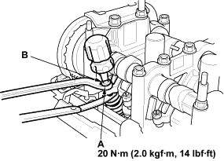
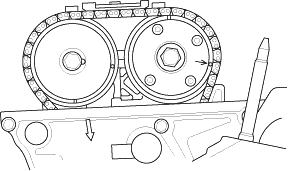
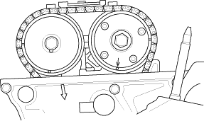
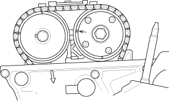

- If you feel too much or too little drag, loosen the locknut (A) and turn the adjusting screw (B) until the drag on the feeler gauge is correct.

- Tighten the locknut and recheck the clearance. Repeat the adjustment if necessary.
- Rotate the crankshaft 180° clockwise (camshaft pulley turns 90°).

- Check and, if necessary, adjust the valve clearance on No. 3 cylinder.

- Rotate the crankshaft 180° clockwise (camshaft pulley turns 90°).

- Check and, if necessary, adjust the valve clearance on No. 4 cylinder.
- Rotate the crankshaft 180° clockwise (camshaft pulley turns 90°).

- Check and if necessary, adjust the valve clearance on No. 2 cylinder.
- Install the cylinder head cover (see page 6-44).